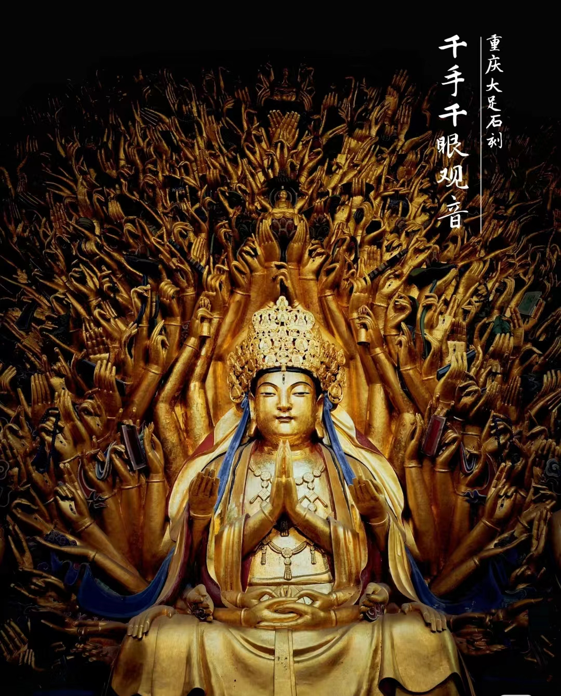
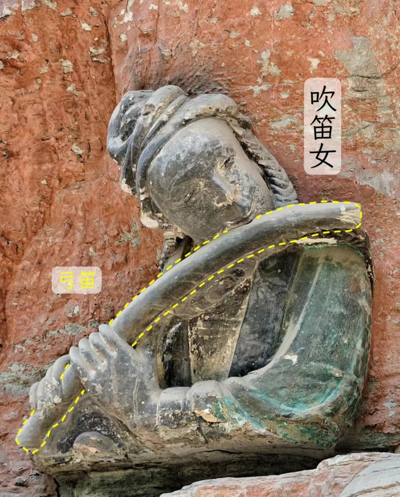
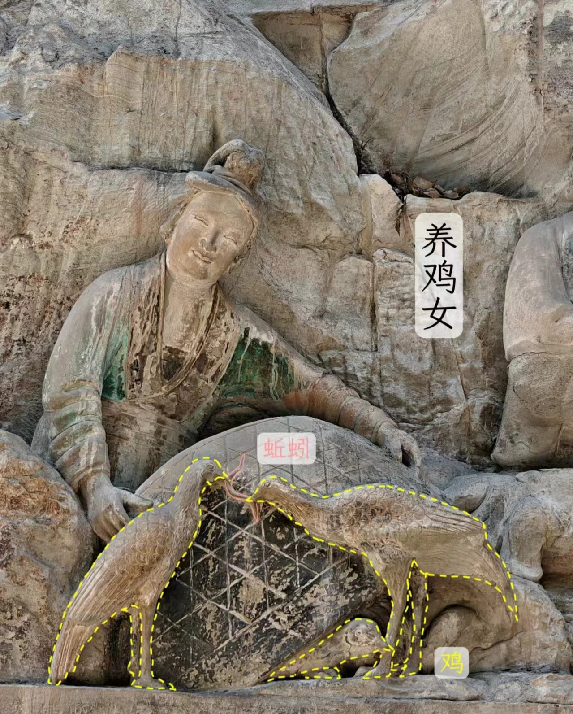

历史文化

大足石刻
重庆大足石刻，位于重庆市大足区，是一处集佛教、道教、儒教艺术于一体的石刻群，被誉为世界八大石窟之一，也是中国晚期石窟艺术的代表。大足石刻最初开凿于初唐永徽年间，历经晚唐、五代、两宋，明清时期亦有所增刻，形成了一处规模庞大、雕刻精美、题材多样、内涵丰富的石刻群。其中，宝顶山和北山石窟尤为著名，宝顶山石窟以千手观音像最为著名，北山石窟则以各种佛像和佛传故事为主，展现了古代中国佛教文化的精髓。大足石刻不仅以其精湛的雕刻技艺和丰富的题材内容吸引了无数游客的目光，还因其大量的实物形象和文字史料，从不同侧面展示了从唐末至宋代中国石窟艺术的风格以及民间宗教信仰的重大发展和变化，对中国石窟艺术的创新与发展有重要贡献。1999年12月，大足石刻被联合国教科文组织列入《世界遗产名录》，是重庆唯一的世界文化遗产。
民间故事

吹笛女
一日，释迦牟尼的弟子阿难入王舍城化缘，遇一年轻男子，因供养父母贫困潦倒，却仍用扁担挑着年迈失明的父母沿街乞讨，得到施舍后好的给父母，坏的留给自己。此时，六师外道（指与佛教对立的六个学派）迎面走来，他们对阿难说：“释迦号称德行高尚，却舍弃父母，丢下妻儿，还不如这个乞丐。”阿难羞愧难当，返回后问释迦，“佛家可有教乎？”释迦说：“这不是你能说出来的话，从哪听来的？”阿难描述了他的经历后，释迦牟尼大放光明，为诸菩萨弟子说《大方便佛报恩经》，以正视听。吹笛女便是故事中的六道之一，与其他五位手舞足蹈、充满戏谑的形态不同，她包头巾、梳双辫，手执弓笛，头部微侧，沉浸其中，温柔娴雅。

养鸡女
养鸡女虽然眼睛瞎了,却坦然自若,脸上充满幸福的微笑。这就奇怪了,地狱里都就是阳间犯罪来受罚的,而她为什么还显得十分幸福? 说来阿,这里还有一段故事,这养鸡女阿名叫奚成凤,就是一位善良大胆的姑娘,就住在宝顶山下。一次,奚成凤的鸡跑到山上佛堂里,被一个和尚给打死了,奚成也为她感到不平,但胳膊扭不过大腿,不得不在打造时剜了奚成凤的眼睛,却留下了幸福的微笑凤就去找当时的住持赵智凤理论,在群众的帮助下,赵智凤不得不把鸡钱赔给了奚成凤。可就是,佛尚且有过,何况当时的赵智凤还没有修成正果,他对这件事耿耿于怀,一定要在修造地狱时把奚成凤放进去。而当时的工匠刘思久平时多受奚成凤照顾,。 好了,相信大家在看完这些后也许还兴犹未尽,但就是我不得不和朋友们说再见啦。俗话说,天下没有不散的宴席,但就是有缘的话我们定会在某个地方,某个时间再次重逢。最后,希望大家一路顺风。
大足石刻宣传视频
让我们一起探索山城重庆吧!